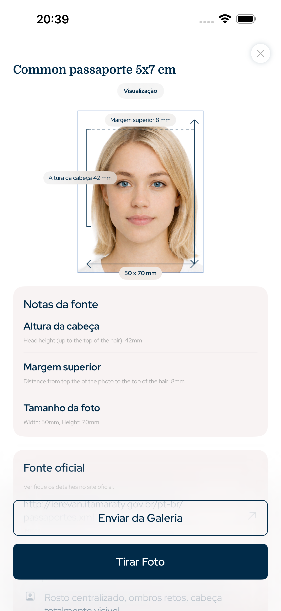

Brazil · app foto 3x4, foto passaporte, foto visto, foto RG, foto CNH, foto documentos
Foto 3x4, passaporte e visto com medidas corretas
Este app para iPhone prepara foto 3x4, foto de passaporte, visto, RG, residência e CNH com tamanho correto, proporção da cabeça, margem superior, fundo e exportação digital ou para impressão.
- Rosto
- Sem IA
- Corte
- Cabeça + margem sup.
- Export
- Digital + impressão

Margem superior
precisa
Proporção da cabeça
guiada
Requisitos pesquisáveis
Feito com base nas regras oficiais de geometria de foto
O app foca em regras mensuráveis de fotos para documentos: tamanho, export em pixels, altura da cabeça, posição do rosto, margem superior, fundo e layout de impressão.
Proporção da cabeça e margem superior
Sem alteração facial por IA
Arquivo digital e folha para impressão
Brazil document types
Fotos que este app pode preparar
App de Foto 3x4 e Passaporte cobre os fluxos de fotos oficiais mais comuns para usuários iPhone que precisam de um arquivo digital ou folha de impressão.
Foto 3x4
Foto de passaporte
Foto de visto
Foto RG
Foto CNH
Integridade da foto
Sem alteração facial por IA
O fluxo de trabalho é intencionalmente prático: recortar a imagem, alinhar a cabeça, preservar o rosto, preparar o fundo e exportar o tamanho correto. É feito para preparação de fotos de documentos oficiais, não para retoques de beleza.
1Selecione o país e o documento
2Alinhe a cabeça e a margem
3Exporte um arquivo digital ou folha de impressão
Perguntas
FAQ
O app altera meu rosto com IA?
Não. Ele não muda traços faciais; trabalha com recorte, tamanho, fundo e exportação.
Posso fazer foto 3x4?
Sim. Escolha o tipo de documento para gerar a foto no tamanho correto.
Posso imprimir?
Sim. Exporte uma folha pronta para impressão ou um arquivo digital.
App de Foto 3x4 e Passaporte
Prepare foto 3x4, passaporte, visto, RG e CNH no iPhone com tamanho correto, proporção da cabeça, margem superior e exportação.
Baixar na App Store